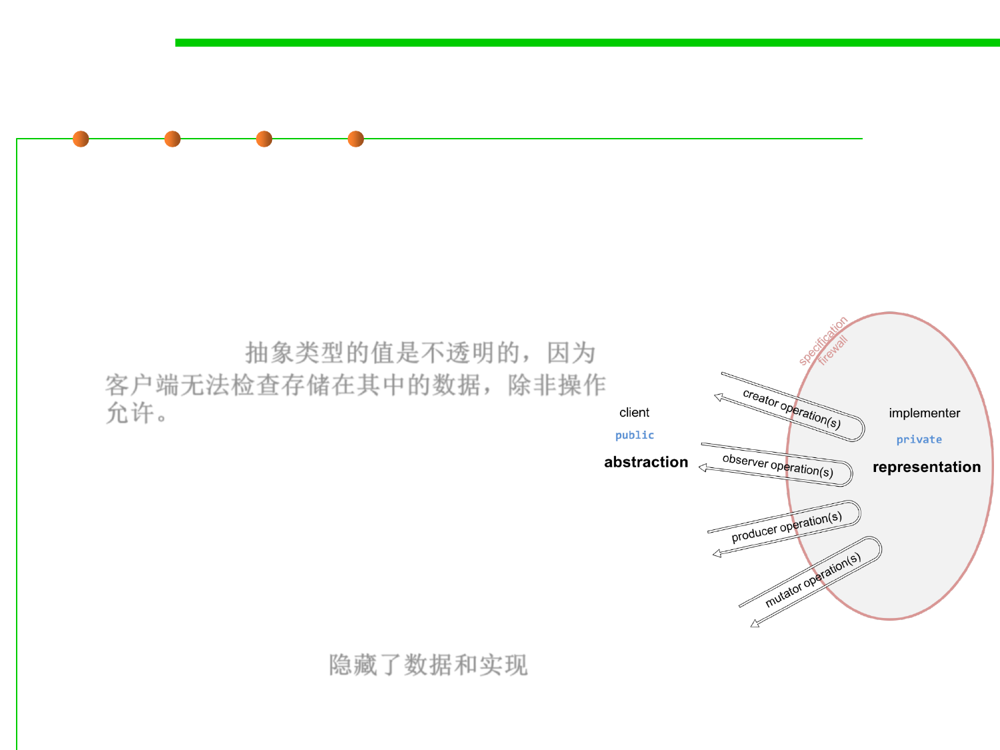

3.3 Abstract Data Type (ADT)
An abstract type is defined by its operations
▪ The essential idea here is that an abstract
data type is defined by its operations.
– The values of an abstract type are opaque in
the sense that a client can’t examine the data
stored inside them, except as permitted by
operations. 抽象类型的值是不透明的，因为
客户端无法检查存储在其中的数据，除非操作
允许。
– Expanding our metaphor of a specification
firewall, you might picture values of an
abstract type as hard shells, hiding not just
the implementation of an individual
function, but of a set of related functions
(the operations of the type) and the data
they share (the private fields stored inside
values of the type). 隐藏了数据和实现